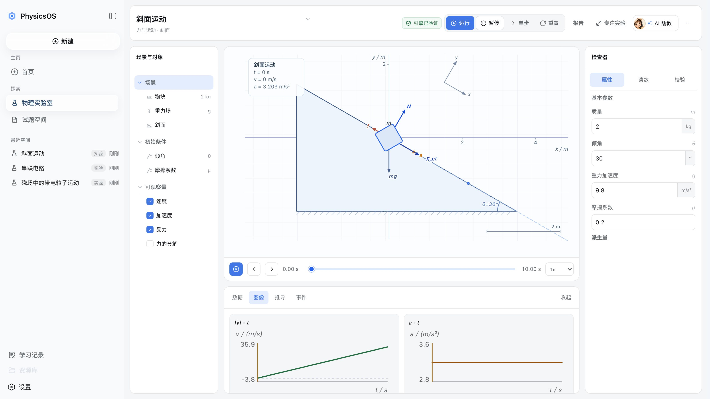
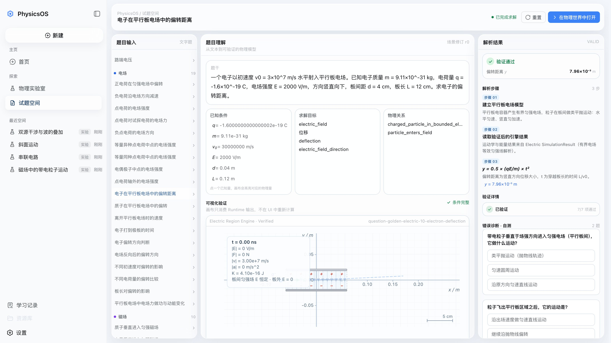
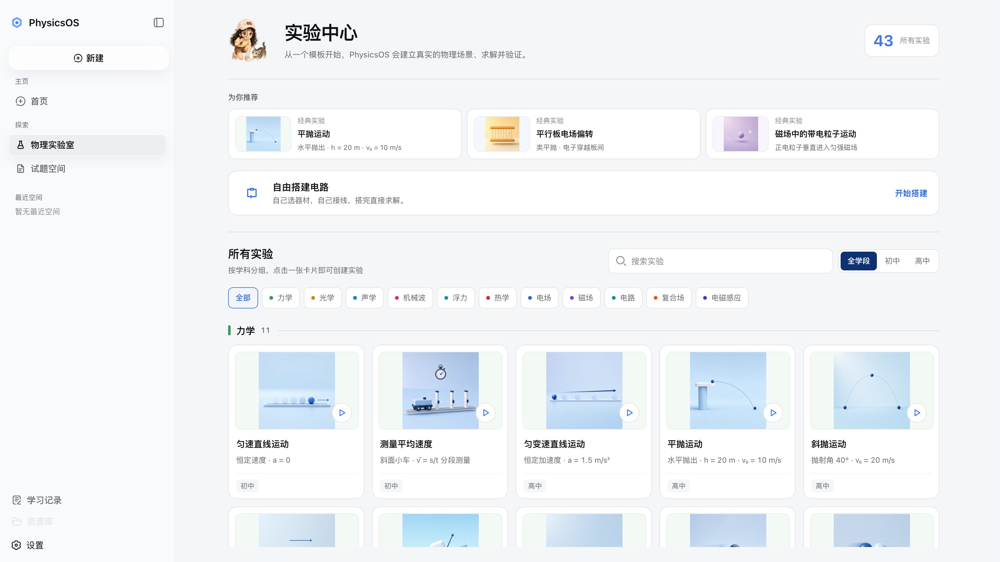

确定性引擎
每个领域由独立物理引擎求解：电路解 Kirchhoff 方程组，磁场解圆周运动， 碰撞按动量守恒推进。同一组参数，永远得到同一个世界。
Physics World
力学、电路、电场、磁场、复合场、电磁感应、机械波、光学、声学、热学、流体—— 每个领域共用同一套画布、时间轴、属性面板与验证器。切换的是世界，不变的是操作方式。

mechanics / incline
Engine · Observation · Agent
这是 PhysicsOS 的第一条架构原则。语言模型负责理解、规划与解释； 场景、引擎与验证器负责这个世界真实如何运行。画布上出现的每一个矢量、 每一条轨迹、每一个读数，都能追溯到引擎断言过的事实。
每个领域由独立物理引擎求解：电路解 Kirchhoff 方程组，磁场解圆周运动， 碰撞按动量守恒推进。同一组参数，永远得到同一个世界。
不可见的物理量变成可见信息：力矢量、场线、等势线、轨迹、关键点与标注。 显示什么、不显示什么由引擎数据决定，而不是由绘图代码想象。
守恒律、边界条件与题面约束被独立校验：KCL 逐段核账、功率守恒、 连接关系唯一性。验证未通过的世界不会被当成事实展示。
改一个参数，就是向世界提交一次带版本号的命令：运行、暂停、 单步、0.25–2 倍速、拖动时间轴回放。每一次修改都有据可查。
AI 助手读取的是这个场景的真实状态：版本、解、验证结果、 当前时间与你正在看的量。它的回答会标注引用了哪条事实， 而不给出一条无法追溯的结论。
从题目进入实验室，第一次修改物理事实时自动分叉：原题永不被实验改动， 实验带着自己的血缘记录独立生长。改坏了，随时回到原题。
Question Space
试题空间内置 80 道题目。每道题都能一键「在物理世界中打开」—— 题干条件变成场景事实，答案在同一个世界里被推导、被验证、被看见。


Experiment Library
43 个内置可运行模板覆盖初中到高中：从匀速直线运动到回旋加速器之前的一切。 每个模板都是一次真实场景构建，不是一段播放的动画。
Why It Can Be Trusted
物理教学工具最危险的失败不是画得不好看，而是画错了却没被发现。 PhysicsOS 用四道约束把「好看」和「真实」绑在一起。
从一道题、一个模板，或者一次纯粹的「如果改成这样会怎样」开始。